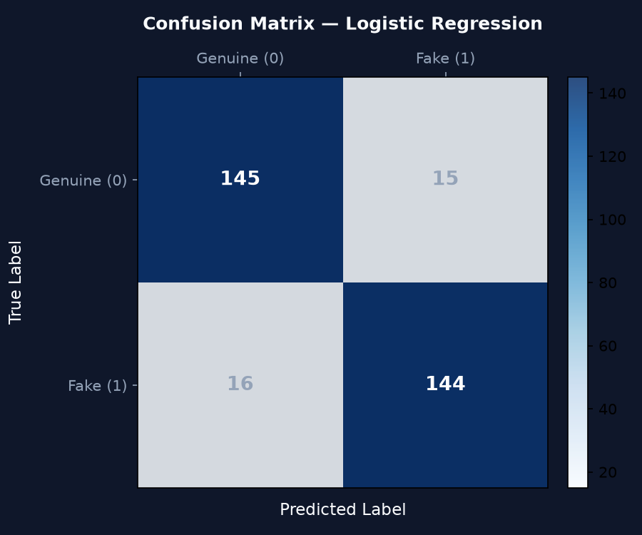
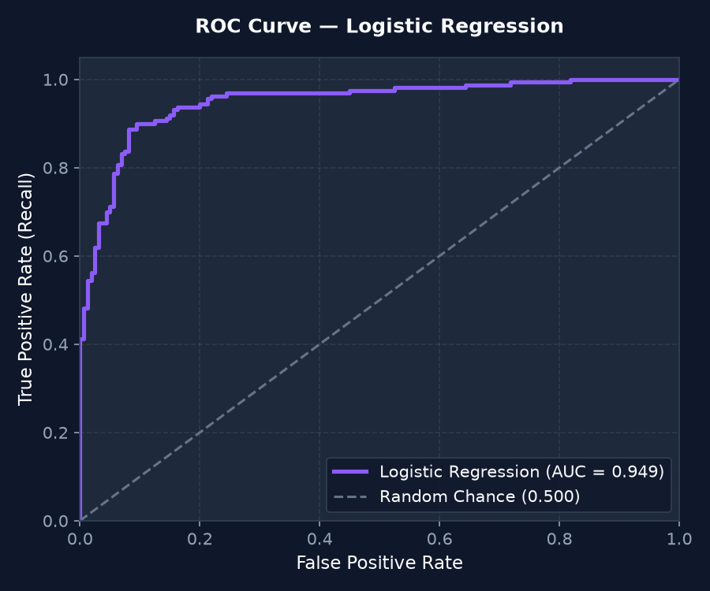

E-commerce consumer trust is severely threatened by deceptive opinion spam—fictitious reviews written to manipulate ratings. Empirical human evaluations show that human readers detect deceptive reviews at approximately 57% accuracy (virtually equal to chance).
Project Solution: ReviewGuard AI provides an end-to-end Machine Learning web application utilizing sublinear TF-IDF n-gram feature extraction and supervised classification to automatically identify deceptive patterns, present calibrated confidence meters, and explain predictions via token-level feature attributions.
Trained on the gold-standard Ott et al. Deceptive Opinion Spam Corpus (Cornell NLP / ACL 2011) comprising 1,600 reviews across 20 hotels in Chicago.
0 = Genuine Review, 1 = Potentially Fake Review.& to &) and strips HTML tags.Evaluated across 3 supervised algorithms using 5-Fold Stratified Cross-Validation on an 80% training split, followed by final hold-out testing on an untouched 20% test partition (320 samples):
| Candidate Model | 5-Fold CV Acc | 5-Fold CV F1 | Test Accuracy | Test Precision | Test Recall | Test F1-Score | ROC-AUC |
|---|---|---|---|---|---|---|---|
| Logistic Regression (Selected) | 88.87% | 88.86% | 90.31% | 90.57% | 90.00% | 0.9028 | 0.9486 |
| Multinomial Naive Bayes | 88.95% | 89.35% | 88.44% | 84.75% | 93.75% | 0.8902 | 0.9504 |
| Calibrated LinearSVC | 89.18% | 89.15% | 88.75% | 87.80% | 90.00% | 0.8889 | 0.9497 |


We employed a scikit-learn Pipeline. Vectorizer fitting occurred exclusively on the 80% training split. The 20% hold-out test set was never exposed to the vectorizer or model until final evaluation.
Accuracy fails to measure class-specific coverage. In deceptive review detection, false accusations against honest reviews (Precision) and missed deceptive spam (Recall) must both be measured. Our model achieves a balanced 90.57% Precision and 90.00% Recall (0.9028 F1-Score).
Logistic Regression produced the highest balanced test F1-score (0.9028), yields calibrated posterior probabilities via the sigmoid function, and allows exact linear feature attribution without approximation.
Genuine reviews emphasize spatial, physical specifics (room layout, water pressure, transit proximity). Deceptive reviews overcompensate with positive superlatives ("paradise", "flawless"), punctuation intensity, and elevated first-person pronouns.
No. The system evaluates learned statistical patterns in text, not legal identity or physical receipts. Our UI displays an explicit legal disclaimer stating results are indicative likelihoods.
We built 36 unit and integration tests using pytest covering preprocessing edge cases, schema validation, model training, prediction boundaries, and FastAPI REST endpoints (100% pass rate).